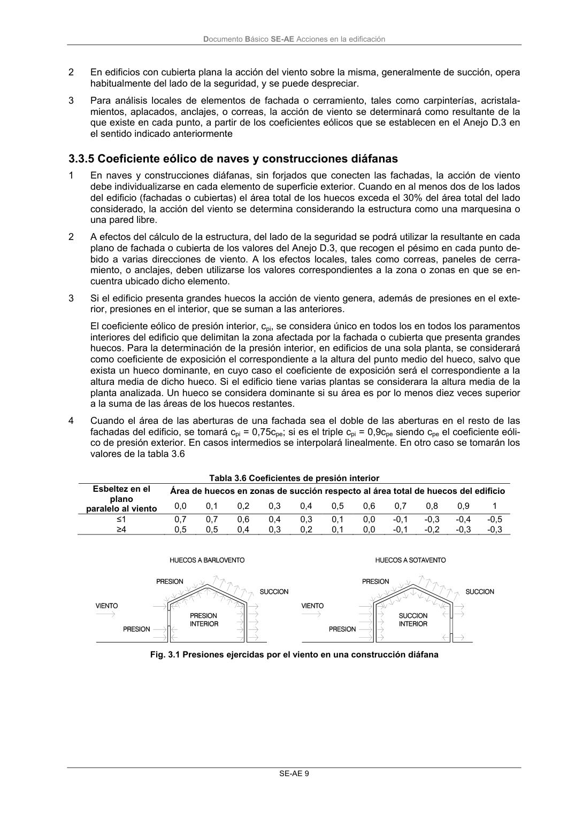

DB-SE-AE Acciones en la edificación · edición 2009-04 · capa oficial
Documento DB-SE-AE-oficial · SHA-256 del PDF 26116e5088955f0c6963a6187270cad282e1e7bf5a53a90f695c8fa50b4e4487
Copia fiel del PDF fuente · Fuente oficial
Ficha de la disposición en la fuente oficial
Formatos: JSON del segmento · Markdown
3.3.4 Coeficiente eólico de edificios de pisos 1 En edificios de pisos, con forjados que conectan todas las fachadas a intervalos regulares, con hue- cos o ventanas pequeños practicables o herméticos, y compartimentados interiormente, para el análisis global de la estructura, bastará considerar coeficientes eólicos globales a barlovento y sota- vento, aplicando la acción de viento a la superficie proyección del volumen edificado en un plano perpendicular a la acción de viento. Como coeficientes eólicos globales, podrán adoptarse los de la tabla 3.5. Tabla 3.5. Coeficiente eólico en edificios de pisos Esbeltez en el plano paralelo al viento < 0,25 0,50 0,75 1,00 1,25 ≥ 5,00 Coeficiente eólico de presión, cp 0,7 0,7 0,8 0,8 0,8 0,8 Coeficiente eólico de succión, cs -0,3 -0,4 -0,4 -0,5 -0,6 -0,7 Para otros casos y como alternativa al coeficiente eólico global se podrá determinar la acción de viento como resultante de la que existe en cada punto, a partir de los coeficientes eólicos que se es- tablecen en del Anejo D.2 para diversas formas canónicas, aplicando los de la que presente rasgos más coincidentes con el caso analizado, considerando en su caso la forma conjunta del edificio con los medianeros. Documento Básico SE-AE Acciones en la edificación SE-AE 9 2 En edificios con cubierta plana la acción del viento sobre la misma, generalmente de succión, opera habitualmente del lado de la seguridad, y se puede despreciar. 3 Para análisis locales de elementos de fachada o cerramiento, tales como carpinterías, acristala- mientos, aplacados, anclajes, o correas, la acción de viento se determinará como resultante de la que existe en cada punto, a partir de los coeficientes eólicos que se establecen en el Anejo D.3 en el sentido indicado anteriormente
